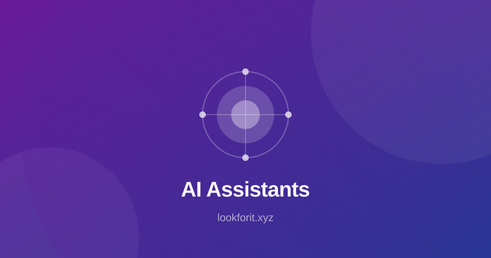

ChatGPT - AI assistant for writing and ideation.
Claude Fable 5.2: What Is New, What It Costs, Who Should Use It
Anthropic's new flagship is 20 percent cheaper per token, top of the charts, and already in GitHub Copilot — with one catch worth reading first.
Published November 2026
Anthropic released Claude Fable 5.2 and Claude Mythos 5.2 on Monday, 9 November 2026. Within hours, Fable 5.2 took first place on the Artificial Analysis Intelligence Index, and GitHub made it generally available in Copilot the same day. It is a rare combination: a flagship model that is both better and cheaper per token than the version it replaces.
The headline is simple. Fable 5.2 costs $8 per million input tokens and $40 per million output tokens, down from $10 and $50 on Fable 5.1 — a 20 percent cut. It is also up to 30 percent faster, according to Anthropic, with an optional fast mode that runs up to 2.5 times faster. But the fine print matters: the model is more token-hungry, it requires 30-day data retention by default, and its migration guide lists changes that can break code that works today.
This article covers what launched, what it costs in practice, where you can use it, the retention rule, and whether you should switch. Prices are Anthropic's list prices as reported on 9 to 11 November 2026; check the current pricing page before you commit a budget.

What Launched on 9 November 2026
Anthropic shipped two models. Claude Fable 5.2, model ID claude-fable-5-2, is the general flagship for the hardest technical work. Claude Mythos 5.2, model ID claude-mythos-5-2, is its sibling for verified organisations, at the same pricing. The release notes list a 1 million token context window, 128k maximum output, and always-on adaptive thinking. Claude Code version 2.1.321, published the same day, makes Fable 5.2 the default Fable model.
The benchmark headline is strong. Fable 5.2 scores 65 on the independent Artificial Analysis Intelligence Index, five points ahead of Gemini 4 Carbon and about 15 ahead of Fable 5.1. Independent indexes are one signal, not a verdict — they test general capability, not your codebase — but taking first place on launch day is the reason this release is being talked about. For the wider comparison of the three big assistants, see our guide to ChatGPT vs Claude vs Gemini.
Availability is broad from day one. Fable 5.2 is generally available on the Claude API, Amazon Bedrock, Google Cloud and Microsoft Foundry. That matters for teams that run Claude through a cloud provider rather than directly: you do not need to wait for a separate rollout on your platform of choice.
Pricing: Cheaper Per Token, Not Always Cheaper Per Task
The price card is straightforward. Fable 5.2 lists at $8 per million input tokens and $40 per million output tokens. Cache reads cost $0.20 per million tokens, five-minute cache writes $10, and one-hour cache writes $16. The optional fast mode costs $16 and $80 per million tokens and speeds up generation by up to 2.5 times. The Batch API gives 50 percent off. All figures are per million tokens, in US dollars.
Here is the catch. SemiAnalysis ran Fable 5.2 on its GDPx benchmark of professional tasks and paid $88.15 per task, up from $67.16 for Fable 5.1 — even though the per-token price fell 20 percent. The model uses more tokens to do the same work. Both SemiAnalysis and Artificial Analysis agree on the direction: cheaper tokens, hungrier model. That does not make Fable 5.2 a bad deal, but it does mean the right question is cost per completed task, not cost per token.
For a practical check, run your own numbers before switching a production workload. Take a week of real prompts, run them on Fable 5.1 and Fable 5.2 side by side, and compare the total bill and the success rate. If your tasks are short and the model finishes them in fewer steps — GitHub reports Fable 5.2 solving more tasks with fewer steps and tool calls in Copilot — you may save money. If your tasks are long and token-heavy, the saving may disappear.

Where You Can Use It
Claude API and Claude Code. Fable 5.2 is the default Fable model in Claude Code 2.1.321, at the same $8 and $40 rate with $0.20 cache reads. If you already use Claude Code, the upgrade arrives with the update.
GitHub Copilot. GitHub added Fable 5.2 to Copilot's model picker on 9 November 2026, the day it launched, covering VS Code, Visual Studio, JetBrains IDEs, Xcode, Eclipse, the Copilot CLI and the Copilot coding agent. It is available on Copilot Pro+, Max, Business and Enterprise, billed at provider list pricing under usage-based billing. Copilot Free and Copilot Pro are not on the list, and the $10 Pro subscription does not absorb usage-based model costs. Rollout is gradual, so the model may not appear in your picker on day one.
Cloud platforms. Fable 5.2 is generally available on Amazon Bedrock, Google Cloud and Microsoft Foundry. Teams that already run Claude through AWS Bedrock can adopt it without changing providers. For the coding side, the model page on GitHub Copilot and the API page on Anthropic API are the starting points in our directory.
The Data-Retention Catch
Fable 5.2 requires data retention by default. Anthropic keeps prompts and outputs for 30 days so its safety classifiers can run. GitHub states that this retained data is not used to train Anthropic's models. On the Claude API, organisations without the retention arrangement get a 400 error on every request.
In Copilot, the rule shows up as a policy switch. For Copilot Business and Enterprise, the Fable 5.2 policy is off by default, and an administrator must enable it — which counts as accepting the retention requirement. Only eligible enterprise customers can get a zero-data-retention exemption, and that runs through the end of 2026. If your organisation has a strict no-retention policy, check the exemption first. Do not enable the model and discover the retention rule afterwards.
This is not a reason to avoid the model, but it is a reason to involve whoever owns your data policy before you roll it out. The retention rule is the single most important difference between Fable 5.2 and Fable 5.1 for enterprise teams, more than the price or the benchmark score.
Should You Switch?
Switch now if you run Claude Code or Copilot and your tasks are coding-heavy. Fable 5.2 solves more tasks with fewer steps and tool calls, according to GitHub, and it is cheaper per token. The upgrade is a version bump, not a migration project, for most individual developers.
Test first if you run a production workload with a fixed budget. Measure cost per completed task on your own prompts, as described above. Watch for the four breaking changes in Anthropic's migration guide, which can break code that works today — read the guide before you change a default model in production.
Hold off if your organisation cannot accept 30-day data retention, or if you are on Copilot Pro or Copilot Free, where the model is not available. In that case, Fable 5.1 remains the model to use, and the 20 percent price cut does not apply to you.
For teams deciding between assistants rather than between Claude versions, the comparison guide to ChatGPT vs Claude vs Gemini covers the three by job, and our AI coding tools guide covers the wider stack. The model itself is listed on our Claude tool page. If you work with data, the best AI tools for data analysis guide pairs well with a stronger reasoning model.
Rich Media: Watch and Adapt
Use this embed slot for topical explainers, walkthroughs, or expert clips. Rich media can improve comprehension and session depth when used to clarify frameworks rather than distract from the article's purpose.
When adding video, keep these rules simple: summarize key points above the embed, add a text-based action checklist below it, and connect viewers to your next internal step. For example, point readers to coding tool selection, assistant comparisons, or small business workflows based on intent stage.
FAQ
1) How much does Claude Fable 5.2 cost?
Fable 5.2 costs $8 per million input tokens and $40 per million output tokens, down from $10 and $50 on Fable 5.1. Cache reads cost $0.20 per million tokens. An optional fast mode costs $16 and $80 per million tokens, and the Batch API gives 50 percent off.
2) Is Claude Fable 5.2 available in GitHub Copilot?
Yes. GitHub made Fable 5.2 generally available in Copilot on 9 November 2026, the day it launched, for Pro+, Max, Business and Enterprise users. Copilot Free and Copilot Pro are not on the list. Rollout is gradual, and Business and Enterprise admins must switch the model policy on first.
3) Does Claude Fable 5.2 require data retention?
Yes, by default. Anthropic keeps prompts and outputs for 30 days so its safety classifiers can run. GitHub states the retained data is not used to train Anthropic's models. Zero-data-retention is available only to certain eligible enterprise customers.
4) Is Fable 5.2 actually cheaper than Fable 5.1?
Per token, yes: 20 percent cheaper. Per task, not always. SemiAnalysis found the model more token-hungry, paying $88.15 per task on its GDPx benchmark against $67.16 for Fable 5.1. Measure your own cost per completed task before switching a production workload.
5) What is Claude Mythos 5.2?
Mythos 5.2 launched alongside Fable 5.2 on 9 November 2026 with the same pricing. It is the sibling model for verified organisations, while Fable 5.2 is the general flagship model.
Related Articles
- AI Coding Tools: A Practical Guide for 2026
- ChatGPT vs Claude vs Gemini: Which for You?
- Best AI Tools for Data Analysis in 2026
- Best AI Tools for Small Business in 2026
Final Takeaway
Claude Fable 5.2 is a genuine step forward: first place on the independent index, 20 percent cheaper per token, up to 30 percent faster, and in GitHub Copilot on launch day. The honest version is that it is also more token-hungry, so the saving shows up per token and not always per task, and it requires 30-day data retention by default. If you code with Claude or Copilot and your data policy allows retention, switch and measure. If retention is a blocker, or you are on Copilot Pro, stay on Fable 5.1 and revisit when the exemption or your plan changes.